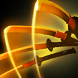
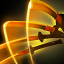

my favourite heroes
Mid lane heroes
Your main priority as a mid-laner in Dota 2 is to shut down the enemy and gain enough farm so that you can work with your team in the mid-game
Carry heroes
In Dota 2, carry heroes are called position one because they have the highest priority of gold and are expected to consume most of the team's resources and space


 
